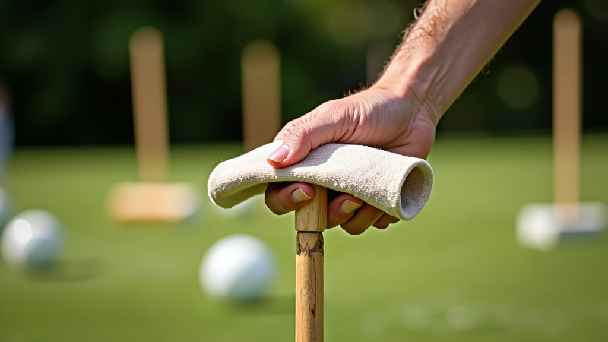
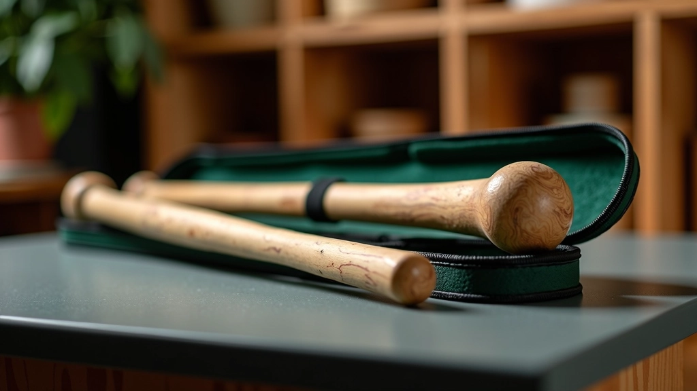

أوزان مطارق الكروكيه: ما الفرق الفعلي؟
شرح تفصيلي لأوزان المطارق المختلفة من 680 إلى 1000 جرام وتأثير كل منها على قوتك وتحكمك.
اقرأ المزيدإرشادات عملية لصيانة مطرقتك بشكل صحيح وإطالة عمرها والحفاظ على أدائها لسنوات طويلة.

المطرقة الجيدة استثمار حقيقي في لعبتك. لكن مثل أي أداة، فإنها تحتاج إلى رعاية منتظمة للبقاء في أفضل حالة. نحن نتحدث هنا عن الأشياء البسيطة التي تحدث فرقاً حقيقياً — التنظيف الصحيح، التخزين الذكي، والفحص الدوري.
لا تحتاج إلى أن تكون خبيراً لتحافظ على مطرقتك في حالة جيدة. الأساسيات سهلة جداً، وستوفر عليك الكثير من الإحباط على الطريق. دعنا نتحدث عما تحتاج فعلاً إلى معرفته.
بعد كل جلسة لعب، خذ بضع دقائق فقط لتنظيف مطرقتك. الأوساخ والرطوبة تتراكم بسرعة، خاصة إذا كنت تلعب في الهواء الطلق.
الحقيقة هي أن معظم الضرر يأتي من الإهمال البسيط. تنظيف سريع كل مرة يعني أنك لن تضطر أبداً إلى تنظيف مكثف.


كيفية تخزين مطرقتك مهمة مثل كيفية استخدامها. الظروف البيئية الخاطئة يمكن أن تسبب تشققات في الخشب، وتؤثر على شكل رأس المطرقة، وتتلف المقبض.
احفظ مطرقتك في مكان جاف وبارد — غرفة عادية في منزلك تعمل بشكل مثالي. تجنب المرائب الرطبة والعلية الساخنة والسيارات. الرطوبة العالية تشقق الخشب، والحرارة الشديدة تشوه البلاستيك والمركبات.
إذا كان لديك حقيبة حماية متخصصة، استخدمها. إن لم تكن لديك، حقيبة القماش العادية تعمل بشكل جيد. المهم هو حماية المطرقة من الصدمات والرطوبة المباشرة.
ضع المطرقة أفقياً أو معلقة — لا تستندها على رأسها. الضغط المستمر على رأس المطرقة يمكن أن يؤثر على شكلها بمرور الوقت.
تفقد رأس المطرقة كل شهر تقريباً. ابحث عن التشققات الصغيرة أو الخدوش العميقة. التشقق الصغير يمكن أن يتطور إلى مشكلة كبيرة إذا تُركت دون معالجة. الخدوش السطحية عادية وليست مشكلة.
تحقق من أن رأس المطرقة مثبت بإحكام على المقبض. إذا كان يتحرك أو يصدر صرير عند الضغط، فقد حان الوقت لشد المسامير أو استبدال الترابط. رأس مطرقة متحرك يؤثر على أدائك ويمكن أن يسبب إصابات.
انظر إلى المقبض بحثاً عن علامات الاهتراء. إذا كان الخشب بدأ يتشقق أو يصبح خشناً جداً، قد تحتاج إلى إعادة تشطيب أو تغطية جديدة. مقبض آمن مريح يجعل فارقاً كبيراً في لعبتك.
هل تشعر أن مطرقتك مختلفة قليلاً عما تتذكره؟ المطرقات يمكن أن تتغير بمرور الوقت. إذا كانت أخف بشكل ملحوظ أو أقل مرونة، قد تحتاج إلى استشارة متخصص.
شرح تفصيلي لأوزان المطارق المختلفة من 680 إلى 1000 جرام وتأثير كل منها على قوتك وتحكمك.
اقرأ المزيد
مقارنة شاملة بين المقابض الخشبية التقليدية والمقابض المركبة الحديثة ومميزات كل منها.
اقرأ المزيدنصائح عملية لاختيار الوزن المناسب بناءً على قوتك البدنية والمسافات التي تريد تحقيقها.
اقرأ المزيدفريق التحرير
كتبه فريق ملاعب الدقي التحريري، مكرس لتقديم إرشادات عملية وسهلة المتابعة عن رياضة الكروكيه.
صيانة مطرقتك ليست مهمة معقدة. إنها مجرد عادات بسيطة تجعل فارقاً كبيراً. تنظيف منتظم، تخزين ذكي، وفحص دوري — هذه الأشياء الثلاثة ستبقي مطرقتك في حالة ممتازة لسنوات.
لا تنتظر حتى تواجه مشكلة كبيرة. الاعتناء بمطرقتك الآن يعني أنك ستتمكن من التركيز على لعبتك بدلاً من القلق بشأن معداتك. وهذا يعني نتائج أفضل، لعب أفضل، ومتعة أفضل.
هذا المحتوى مقدم لأغراض تعليمية وإعلامية فقط. نحن نقدم إرشادات عملية بناءً على أفضل الممارسات الشائعة في رياضة الكروكيه. قد تختلف احتياجات الصيانة الدقيقة حسب نوع المطرقة والمواد المستخدمة والظروف المحلية. إذا كانت لديك مطرقة عالية القيمة أو نادرة، نوصي باستشارة الصانع أو متخصص في الكروكيه للحصول على نصائح محددة عن الصيانة.